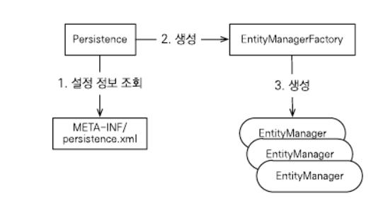

JPA
Java Persistence API, 자바 ORM API 표준 명세이다.
다양한 벤더들에서 이 표준에 대한 구현체를 제시하고 있고, 그 중 Hibernate가 많이 쓰인다.
1. JPA Architecture

- EntityManagerFactory : EntitManager 인스턴스 생성하고 관리하는 팩토리 클래스.
- EntityManager : 객체에 대한 영속성 오퍼레이션들을 관리한다. works like factory for Query instances
- Entity : 영속성 객체로서, 데이터베이스에 저장된다.
- EntityTransaction : EntityManager와 일대일 관계를 가진다. 각 엔티티매니저마다의 오퍼레이션들은 이 클래스에 의해 관리된다.
- Persistence : EntityManagerFactory 인스턴스 생성하는 스태틱 메서드를 가지고 있는 클래스.
- Query : JPA 벤더에 의해 구현되는 인터페이스로서, 기준을 충족하는 relational object들이 있다.

2. 왜 사용하는가?
- RDBMS 독립적인 프로그래밍이 가능하다. Dialect만 바꿔주면 되기 때문.
- 객체지향적 모델링과 테이블 모델링간의 간극을 좁힐 수 있다. 책의 저자는 이를 패러다임 불일치라고 소개한다.
- 덕분에 객체 매핑을 위한 코드도 대폭 감소한다.
3. 예제
1
2
3
4
5
6
7
8
9
10
11
12
13
14
15
16
17
18
19
20
21
22
23
24
25
26
27
28
29
30
public class CreateEmployee {
public static void main( String[ ] args ) {
//설정 파일인 persistence.xml에 대한 내용은 생략.
//unique한 이름, jdbc driver, user, password, url, dialect 등의 설정이 필요하다.
//Persistence의 static메서드를 통해 EntityManagerFactory 생성
EntityManagerFactory emf = Persistence.
createEntityManagerFactory( "Eclipselink_JPA" );
//emf를 통해 EntityManager 생성
EntityManager em = emf.
createEntityManager( );
//트랜잭션 시작
em.getTransaction( ).begin( );
Employee employee = new Employee( );
employee.setEid( 1201 );
employee.setEname( "Gopal" );
employee.setSalary( 40000 );
employee.setDeg( "Technical Manager" );
em.persist( employee );
em.getTransaction( ).commit( );
//트랜잭션 종료
//자원 반환
em.close( );
emf.close( );
}
}
- emf는 생성 비용이 매우 크므로 애플리케이션 전역에서 한 번만 생성한 뒤 공유해서 사용한다.
- 반면 em은 DB Connection과 밀접한 관계이므로 스레드간 공유시 동시성 문제가 발생할 수 있다.
- em은 DB Connection이 필요한 시점까지 Connection을 얻지 않는다.
